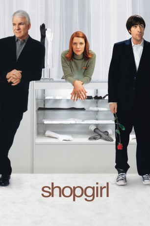

#8388 Shopgirl
 
 IMDB-Wertung: 6.4 / 10
IMDB-Wertung: 6.4 / 10  Tomatometer: 60
Tomatometer: 60  Metascore: 0
Metascore: 0 
Mirabelle arbeitet als Handschuh-Verkäuferin in einem Nobelkaufhaus. Die einsame Romantikerin verliebt sich Hals über Kopf in ihre schräge Waschsalon-Zufallsbekanntschaft Jeremy und fängt zugleich eine Beziehung mit einem reichen älteren Kunden an, der seine Gefühlskälte mit Geschenken und Höflichkeiten überspielt. Zwischen beiden Männern hin- und hergerissen muß sie eine Entscheidung treffen... Melancholische Romantikkomödie nach dem Roman des Schauspielers Steve Martin, der auch das Drehbuch schrieb und in die Rolle des (zu alt gewordenen) Galans schlüpfte.
Jahr: 2005
Dauer: 99 Minuten
FSK: 0
Land: USA Studio: Buena Vista Pictures DistributionTonspuren:
Untertitel:
Auflösung: 720p (1280x544) Größe: 1935 MB
Genre: Drama, Liebe
Regisseur: Anand Tucker
Drehbuch: Steve Martin
Soundtrack: Barrington Pheloung
Darsteller:
 Steve Martin als Ray Porter
Steve Martin als Ray Porter Claire Danes als Mirabelle
Claire Danes als Mirabelle Jason Schwartzman als Jeremy
Jason Schwartzman als Jeremy Bridgette Wilson-Sampras als Lisa Cramer
Bridgette Wilson-Sampras als Lisa Cramer Sam Bottoms als Dan Buttersfield
Sam Bottoms als Dan Buttersfield Frances Conroy als Catherine Buttersfield
Frances Conroy als Catherine Buttersfield Rebecca Pidgeon als Christie Richards
Rebecca Pidgeon als Christie Richards- Samantha Shelton als Loki
 Clyde Kusatsu als Mr. Agasa
Clyde Kusatsu als Mr. Agasa Romy Rosemont als Loan Officer
Romy Rosemont als Loan Officer- Joshua Snyder als Trey Bryan
 Rachel Nichols als Trey's Girlfriend
Rachel Nichols als Trey's Girlfriend Shane Edelman als Chet
Shane Edelman als Chet- Emily Kuroda als Japanese Woman
- Jayzel Samonte als Houseboy
- Mark Kozelek als Luther
- Alexondra Lee als Karen
- Shannon Hile als SAKS Customer
 Joe Bays als Businessman
Joe Bays als Businessman Randy Oglesby als Tom
Randy Oglesby als Tom Richard Fancy als Eli
Richard Fancy als Eli- Anne Marie Howard als Mandy
 Kevin Kilner als Charley
Kevin Kilner als Charley- Kris Deskins als Armani Seamstress
- Laura Grady als Cosmetic Girl
- Markus Baldwin als Man at Cafe (uncredited)
 Jesse Burch als Man at Gallery (uncredited)
Jesse Burch als Man at Gallery (uncredited)- Laura Mayes Byrnes als Art Patron (uncredited)
- Kimberly Demarse als Accounting Clerk (uncredited)
- Jeanette Driver als Saks Customer (uncredited)
- Zoey Goetsch als Cafe Girl (uncredited)
- Alonzo F. Jones als Restaurant Patron (uncredited)
- Tom Jourden als Gallery Owner (uncredited)
- Nora Paradiso als Shopper (uncredited)
 Dana Schick als Art Patron (uncredited)
Dana Schick als Art Patron (uncredited)- Ozman Sirgood als New York Ballroom Guest #1 (uncredited)
- Shannan Leigh Yancsurak als Gallery patron (uncredited)
- Gina Doctor als Del Rey
- John Fedevich als Hot Tears Band Member
- Zak Sally als Hot Tears Band Member
- Ray Buktenica als Shrink
- Mathew Smith als The Volebeats
- Troy Gregory als The Volebeats
- Scott Michalski als The Volebeats
- Russell Ledford als The Volebeats
- Jeff Oakes als The Volebeats
 Yorgo Constantine als Manager (uncredited)
Yorgo Constantine als Manager (uncredited)- Barbara Ann Crumm als Silverlake Hipster (uncredited)
- Tara Hunnewell als Art Patron (uncredited)
- Henry T. Yamada als Sushi Chef (uncredited)
Datei: X:\2005(N-Z)\Shopgirl (2005, FSK0, 1280x544).mkv seit 28.02.2018
Festplatte: HD 2005(G-Z)-2006(A-Z)
 Es gibt insgesamt 50 Filme in der Gruppe '2005(N-Z)'
Es gibt insgesamt 50 Filme in der Gruppe '2005(N-Z)'